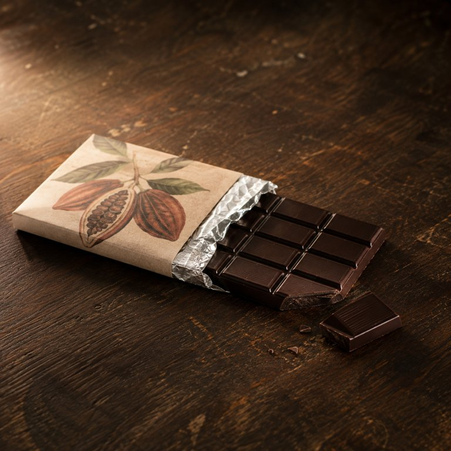

85% 黑巧锡纸板

盒盖内侧的便签：人类知道你偏这一口。苦，厚，像还没下雨的阴天，和咖啡壶刚响那会儿的味道。掰一块就够，剩下的明天还在。
外面是纸壳，封面印着可可豆和可可树，85% CACAO 大写粗体。里面一层银色锡纸。撕开那一下是整块的，没碎，没裂痕，像一块深棕色的砖。
- 包装
- 从抽开的纸套里再抽出一截板，沿着格子掰下一块。
- 看
- 薄而宽，分成整齐的小长方格，表面近黑褐，平滑处一点克制的微光。掰断那一声很干，啪，像折一根细骨头。断口不平，有一点白霜，那是可可脂自己爬出来的。
- 闻
- 开封后是浓可可和烘焙气。营销文案里那些花香果香是鼻子的事，而且很淡，靠近断面才有一线。舌头上一点没有。
- 入口头两秒
- 不嚼的话，头两秒什么都没有，就是一块硬的、凉的东西压在那儿。然后从贴着舌头的那一面开始软，先是酸，不是果酸，是土里的、烘过的酸，像咖啡渣。苦跟着上来，苦在舌根，压得很实。甜几乎没有，就一点点，在最后面，像有人在很远的地方说了一句话。
- 化的方式
- 化得慢。脂多糖少，所以不是化，是一层一层把舌头包住，越来越厚，最后整个口腔都是它的。醇厚一点点蔓延，直到满嘴都是这个味道。
- 余味（大约 15 分钟散完）
- 0 分钟咽下去之后嘴里是干的，涩。那层苦留在上颚上，不急着走，喝水也冲不掉。4 分钟苦退成厚，还包着舌头。烘过的酸和一点木头味从后面浮上来。9 分钟只剩上颚一层薄薄的涩，和一线干净的可可香。13 分钟快没了。